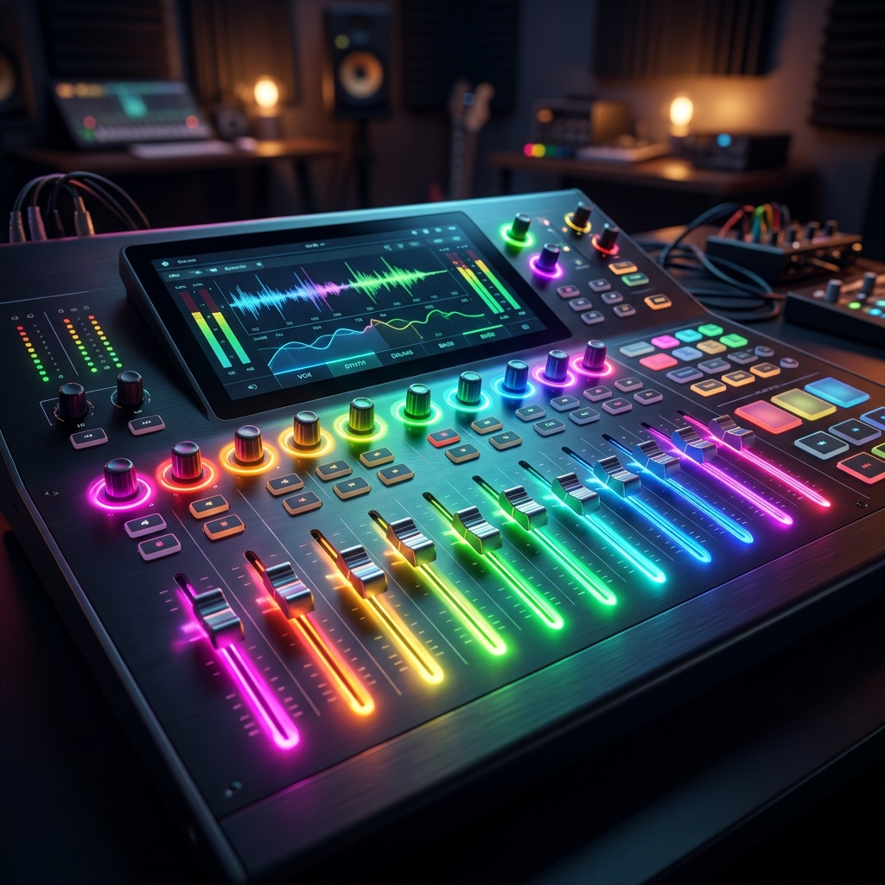

Mixing the Future: Creative Brand Expression with Google Mixboard

Business marketing used to be a one-way street: you show an ad, and the customer watches it. But in 2026, the brands that win are the ones that invite their customers to *create* alongside them. Google Mixboard is a tool designed exactly for that kind of interaction. (Mixboard Welcome)
What is Mixboard?
Mixboard is an AI-powered experimental tool from Google Labs that simplifies music mixing and collaborative creation. It allows anyone—regardless of musical training—to blend tracks, adjust stems, and create professional-sounding mixes in real-time.
Why This Matters for Your Business
Imagine a social media campaign where your customers can "remix" your brand’s theme song to fit their own video content. Or a website where the background music changes based on where a user clicks. At Kemper Design Services, we use tools like Mixboard to build "interactive experiences" that turn passive observers into active participants.
Trending Tasks & Features
- Real-Time Remixed Ads: Letting users change the mood of an ad (from "energetic" to "chill") with a single slider.
- Collaborative Playlists: Building community around your brand by letting users mix tracks together.
- Instant Stem Swapping: Experimenting with different basslines or drum kits for your marketing assets in seconds.
- AI-Assisted Leveling: Ensuring your mixes always sound professional, regardless of the source audio.
The ROI: Viral Potential through Participation
When a customer creates something with your brand’s assets, they are much more likely to share it. Mixboard provides the technical bridge to make that "participation" easy and high-quality. It’s an organic reach engine built on creativity.